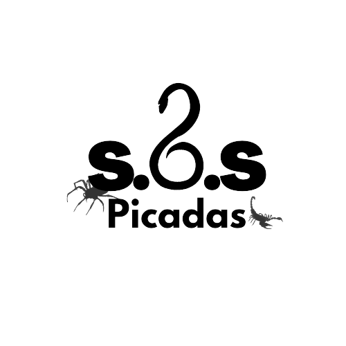

Escorpiões
O escorpião, também conhecido como lacrau ou alacrau, é um artrópode da ordem Scorpiones e pertence à classe dos aracnídeos.
O escorpião, também conhecido como lacrau ou alacrau, é um artrópode da ordem Scorpiones e pertence à classe dos aracnídeos.
